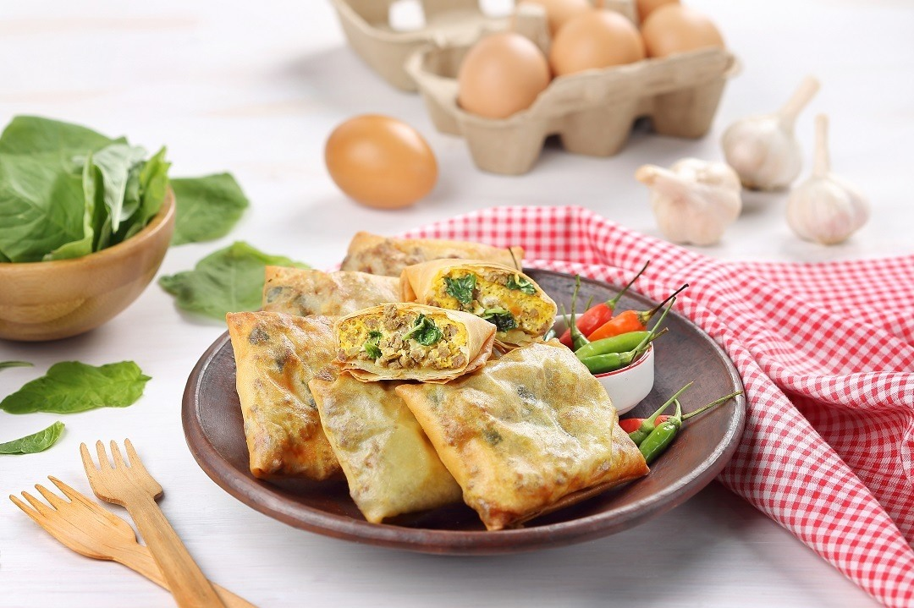

Martabak is a roti-like stuffed and fried pancake which is often served as a popular street food item in countries such as Saudi Arabia, Yemen, Indonesia, and Malaysia. Although the fillings may vary, some of the most popular ones include ground meat, eggs, garlic, onions, peppers, curry, and ghee. Fresh herbs such as coriander and mint are often used for additional flavoring. The flatbread dough is supposed to be extremely thin and requires a lot of expertise. Another name for the dish is mutabbaq, an Arabic word meaning folded, referring to the way in which the stretchy dough is folded around the filling during cooking.
Meal prep time : 50 minutes
Servings : 6